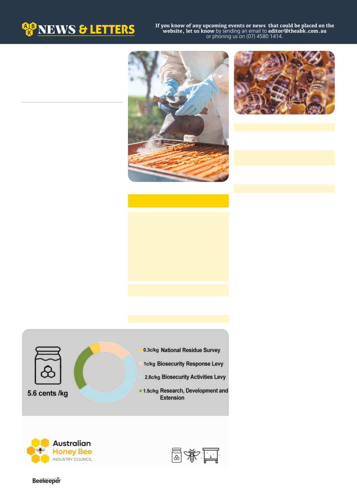

If you know of any upcoming events or news that could be placed on the
website, let us know by sending an email to editor@theabk.com.au
or phoning us on (07) 4580 1414.
NEWS & LETTERS
many services you may have participated
in through the T2M program including
Varroa Development Officers and train-
ing.
To read more about our honeybee
industry levies:
The 2025 Australian Colony
Loss Survey is now open!
Over 1000 beekeepers from across
Australia took part in the 2024 Survey,
giving us vital information about the most
important current issues in Australian
beekeeping. In this round, we’re hoping
to hear from even more beekeepers!
The Survey is your chance to tell the
industry, government and researchers
about the biggest challenges you faced
as a beekeeper in 2025. Together, we
can work out management strategies for
them that will ensure a vibrant Australian
honey bee industry for the future.
The survey is for anyone and everyone
who keeps bees anywhere in Australia!
The survey take 7-15 minutes to com-
plete and is completely anonymous.
You have until 1 November 2025 to have
your say.
Take the survey and find out more
information about COLOSS on the web-
site!
Industry Updates
Varroa Heat Map
QLD, NSW, and Victoria have active
Varroa heatmaps.
emergencies/biosecurity/current-
situation/varroa-mite-emergency-
https://bees.agriculture.vic.gov.au/
Dates for your diary
Tocal Beekeepers Field Day
2025 October 11th
https://www.tocal.nsw.edu.au/events/
Harcourt Field Day
2025 October 12th Bendigo Branch VAA
https://www.vicbeekeepers.com.au/
5th Australian Bee Congress
2026 June 19-21st
CANCELLED
6 |
| Vol. 127 | No. 4